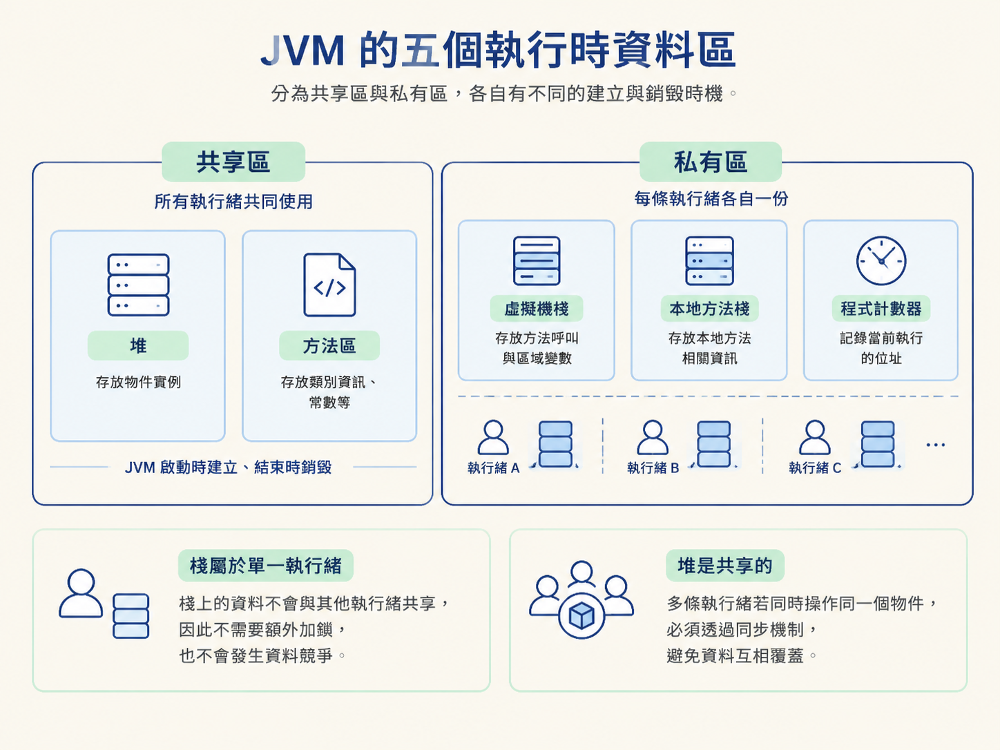
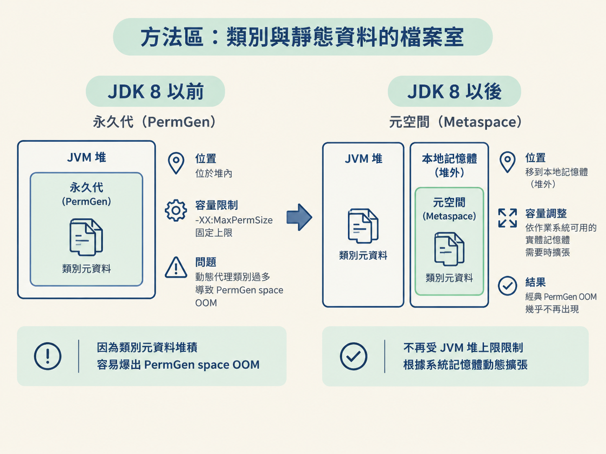
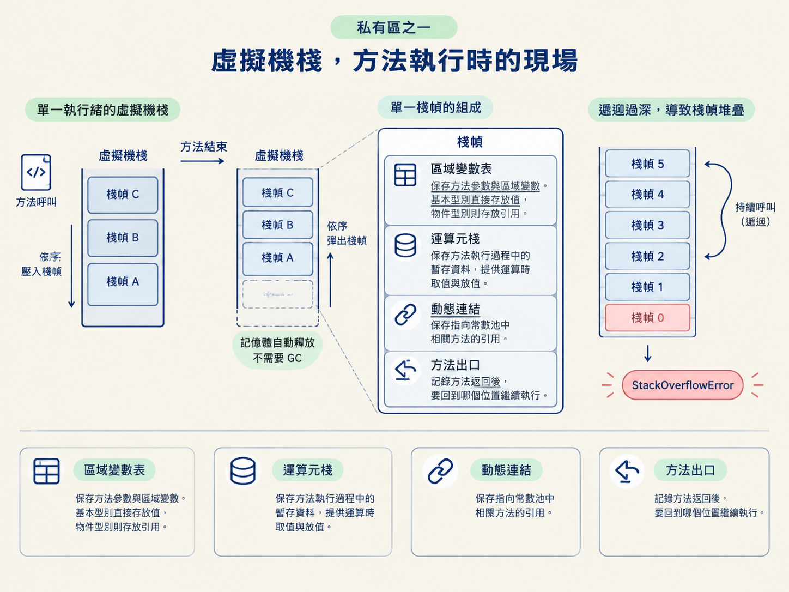
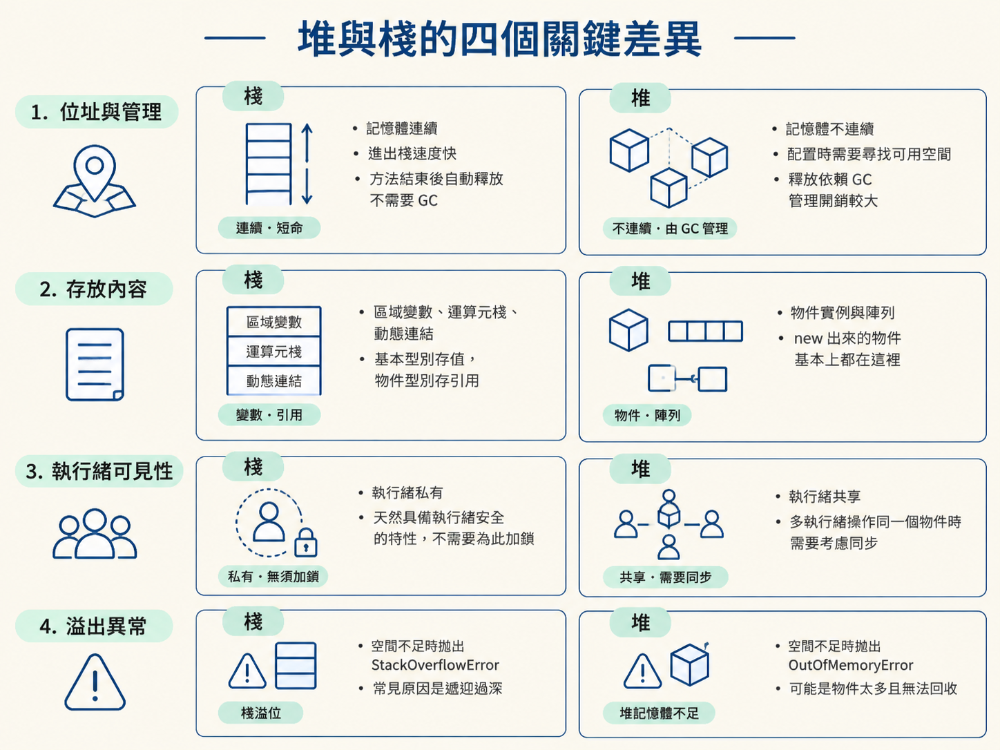

學完這一節，你應該能畫出 JVM 的五個執行時資料區，分辨哪些區域由所有執行緒共享、哪些區域屬於單一執行緒，並從四個面向比較堆與棧。你也會知道，方法區為什麼從永久代改成元空間，以及這個改動解決了什麼問題。
上一節談的是位元組碼如何透過解釋器與 JIT 編譯器，最後變成機器碼執行。這回答了「程式怎麼跑」，但還少了一半：程式跑的過程中，new 出來的物件、方法裡的區域變數，以及已經載入的類別資訊，究竟放在哪裡？
這不是只在考試或面試才有用的知識。線上服務出現 OutOfMemoryError，或遞迴函式突然拋出 StackOverflowError 時，你得先知道是哪一塊記憶體出了問題，才有辦法選對排查方向。
如果把 JVM 想成一間公司，五個執行時資料區就像五個分工不同的部門。有人負責放物件，有人負責記錄類別資料，也有人只服務某一條執行緒。平常各司其職，出事時卻會用完全不同的方式爆炸。這一節先把這張地圖畫清楚。
JVM 的執行時資料區可以分成五塊，而最先要掌握的分類標準很簡單：這塊記憶體能被哪些執行緒看見？
堆（Heap）與方法區（Method Area）是所有執行緒共享的區域。它們會在 JVM 啟動時建立，JVM 結束時銷毀；任何執行緒都可能讀取或修改其中的資料。
另外三塊則是執行緒私有：虛擬機棧（VM Stack）、本地方法棧（Native Method Stack）與程式計數器（Program Counter Register）。每條執行緒都有自己的那一份，執行緒啟動時建立，執行緒結束時銷毀，其他執行緒看不到。
這種設計帶來一個直接的好處：棧上的資料屬於單一執行緒，天然不需要和其他執行緒搶，也就不用為了這些資料額外加鎖。相反地，堆上的物件是共享的，多條執行緒如果同時操作同一個物件，就必須透過同步機制避免資料互相覆蓋。

堆是 JVM 管理的記憶體中最大的一塊。程式裡幾乎所有物件實例與陣列，都會在這裡配置。看到 new 時，可以先把它想成「準備到堆裡找一個位置住下來」。
因為物件不斷在堆裡建立、存活，又不斷有物件變得不再需要，堆自然成了垃圾回收器（GC）的主要戰場，因此也常被稱為「GC 堆」。
堆是共享的，任何執行緒都可能透過引用取得其中的物件。這讓資料在執行緒之間傳遞很方便，但也增加了管理成本：GC 必須判斷哪些物件還有人使用，哪些物件已經可以回收。
當堆已經沒有足夠空間，而且又無法再擴張時，JVM 就可能拋出 OutOfMemoryError。這時問題通常不是某一個方法呼叫太深，而是堆裡的物件太多，或仍被引用而無法回收。
如果說堆放的是一個個實際建立出來的「物件」，那麼方法區放的就是這些物件背後的「設計圖與登記資料」。它主要保存已載入的類別結構、常數、靜態變數，以及即時編譯器編譯後的程式碼。
方法區有一段重要的演進歷史。JDK 8 以前，方法區的實作叫作永久代（PermGen）。它在邏輯上是獨立的區域，但在物理上仍屬於堆的一部分，而且必須透過 -XX:MaxPermSize 設定固定上限。
固定上限在現代框架裡很容易變成瓶頸。Spring、Hibernate 這類框架會透過 CGLib 產生大量動態代理類別，這些類別的元資料都需要放進永久代。當應用程式規模變大，或同一個 JVM 部署多個應用程式時，永久代就可能被撐爆，拋出：
java.lang.OutOfMemoryError: PermGen space
把上限調大可以延後問題，卻沒有真正解決「到底應該預留多大空間」這件事。設得太小，應用程式容易爆掉；設得太大，又會浪費記憶體。
JDK 8 之後，方法區的實作改成元空間（Metaspace），並移到本地記憶體，也就是堆外。類別元資料不再受 JVM 堆上限的直接限制，而是根據作業系統可用的實體記憶體，需要時再擴張。這也是為什麼換到 JDK 8 之後，經典的 PermGen OOM 幾乎不再出現。
虛擬機棧是每條執行緒各自擁有的一塊記憶體，用來描述 Java 方法執行時的狀態。
每當一個方法被呼叫，JVM 就會替它建立一個棧幀（Stack Frame），並把棧幀壓入目前執行緒的棧中。方法執行完成後，棧幀彈出，對應的記憶體也隨之釋放，不需要 GC 介入。
一個棧幀主要包含四類資訊：

棧的空間並不是無限的。遞迴函式每呼叫一次，就會多壓入一個棧幀；如果只進不出，棧幀一層層堆上去，最後就會超出棧的容量，拋出 StackOverflowError。
這和堆滿了所造成的 OutOfMemoryError 是兩種不同的問題。前者常見於遞迴過深，後者則通常與物件配置及 GC 有關，因此排查與修正方向也不一樣。
本地方法棧的角色和虛擬機棧很接近，差別在於它服務的不是 Java 方法，而是以 native 修飾、由 C 或 C++ 實作的本地方法。
它同樣屬於執行緒私有，也同樣可能因為呼叫深度過大而拋出 StackOverflowError。可以把它想成另一條專門通往 JVM 外部原生程式碼的執行現場。
程式計數器是五塊區域中最小的一塊，負責記錄目前執行緒正在執行的位元組碼行號。
執行緒被切換出去之後，過一段時間再切換回來，JVM 必須知道它剛才執行到哪裡，才能從正確的位置繼續。程式計數器就像書籤，讓執行緒暫停後仍能接著原本的進度往下走。
它還有一個特殊身分：是整個 JVM 中唯一不會發生記憶體溢出的區域。原因很直接：它只需要記錄一個執行位置，所佔空間非常小，不會像堆或棧一樣因為資料或呼叫持續增加而爆滿。
堆與棧是面試中最常被放在一起比較的兩個區域。可以先記住這句話：棧處理程式「怎麼執行」，堆處理資料「怎麼存放」。
這不是說棧完全不存資料，而是兩者關心的生命週期不同：棧跟著方法呼叫進出，堆則跟著物件建立與回收。拆成四個面向來看，差異會更清楚。
| 維度 | 棧 | 堆 |
|---|---|---|
| 位址與管理 | 記憶體連續，進出棧速度快；方法結束後自動釋放，不需要 GC | 記憶體不連續，配置時需要尋找可用空間；釋放依賴 GC，管理開銷較大 |
| 存放內容 | 區域變數、運算元棧、動態連結；基本型別存值，物件型別存引用 | 真正的物件實例與陣列，new 出來的物件基本上都在這裡 |
| 執行緒可見性 | 執行緒私有，天然具備執行緒安全的特性，不需要為此加鎖 | 執行緒共享，多執行緒操作同一個物件時需要考慮同步 |
| 溢出異常 | 空間不足時拋出 StackOverflowError，常見原因是遞迴過深 | 空間不足時拋出 OutOfMemoryError，可能是物件太多且無法回收 |

表格背後的核心差異，可以想成兩種完全不同的管理方式：
例如，一個物件如果只在方法內建立並使用，它的使用範圍可能只需要覆蓋這次方法呼叫。但當你把它 return 出去，本質上就是讓它的使用期限延長，不再隨方法結束而消失，而是交由 GC 判斷何時可以回收。這正是上一節逃逸分析想辦法避免的情況。
JVM 執行時資料區分成五塊。執行緒共享的堆，主要放物件與陣列，也是 GC 的主戰場；方法區則放類別資訊、常數與靜態變數，JDK 8 起由永久代改為位於本地記憶體的元空間。執行緒私有的虛擬機棧保存棧幀，描述 Java 方法的執行；本地方法棧服務 native 方法；程式計數器則記錄目前執行到的位元組碼位置，而且是唯一不會溢出的區域。堆與棧的分工，可以概括成「儲存」與「執行」：一個主要依賴 GC 管理，一個隨方法結束自動釋放。
現在可以把這五個區域放在同一張地圖上：物件與陣列住在堆裡，類別的設計與登記資料放在方法區；方法執行時，執行緒則在自己的棧與程式計數器上留下現場。接下來再往堆裡深入一步，就會看到一個物件實際上由哪些部分組成，包括物件頭、實例資料與對齊填充，以及 Mark Word 為什麼會隨著鎖狀態改變。